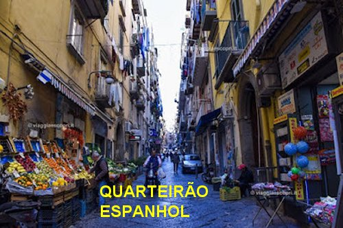
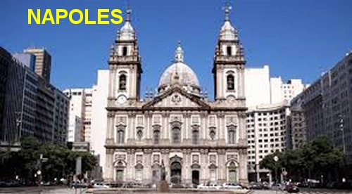

“COMPETENTE E DEDICADA”
A FAMÍLIA
Ana Maria nasceu no dia da Anunciação do Arcanjo Gabriel a MARIA, 25 de março do ano 1715, em Nápoles, Itália, e era filha de Francisco Gallo e de Bárbara Basini, ambos de família simples e condição modesta. Os pais viviam do trabalho numa pequena fabrica de passamanaria, ou seja, trabalhavam com tecidos apropriados para fazer entrelaçados com fio grosso, em geral de seda, destinado a fazer belos acabamentos e adornos, para roupas, cortinas, moveis etc. Era um tipo de tecelagem.
PERFUME DIVINO
Aos quatro anos de idade Ana Maria pediu à mãe que a levasse à Igreja para participar do Santo Sacrifício da Missa. E apesar da pouca idade, revelou um comportamento digno e adulto, despertando a atenção dos conhecidos e inclusive do sacerdote celebrante. Após a cerimônia, o Padre conversando com os familiares, paternalmente recomendou dizendo-lhes que seria muito bom para Ana Maria se ela frequentasse a Igreja, no sentido de despertar na jovem a sua evidente e nascente espiritualidade.
Como as Santas Missas eram celebradas entre sete e oito horas da manhã, a senhora Bárbara, mãe da jovem, sentiu-se cativada pela palavra do sacerdote e então, todo o dia, antes de ir para o trabalho, levava a filha a Igreja e ambas participavam com muita atenção da Santa Missa.
RECEBENDO JESUS NA PRIMEIRA COMUNHÃO
O tempo passou e a menina cresceu. Com sete anos de idade se preparou para receber a Sagrada Eucaristia, o que logo aconteceu depois de devidamente examinada pelo Padre, quando a jovem teve a oportunidade de revelar os seus conhecimentos cristãos e sua vontade pessoal ao Sacerdote. Surpreendido com os dizeres e a firme convicção da menina, num gesto raro e de extrema delicadeza, o Sacerdote com a autorização do senhor Bispo Diocesano, dias após, permitiu-lhe comungar sempre que se mantivesse em pleno “estado de graça”.
OS QUARTEIRÕES ESPANHÓIS
Ana Maria nasceu e
cresceu naqueles famosos “quarteirões espanhóis” que nasceram e cresceram na
cidade, inicialmente ocupado pelos espanhóis que se 
A má fama da região se espalhou, e as autoridades acompanhando aquela brutal e inconveniente promiscuidade, decidiram expurgar os maus feitores e oferecer espaço as obras de caridade, inclusive com a implantação de escolas publicas, para instruir e oferecer conhecimentos profissionais, criando condições de progresso na região, o que de fato veio a acontecer.
Na época de Santa Maria Francisca, em escala menor, aqueles perigos ainda existia, como acontece em todas as cidades, mas o fervor das obras religiosas, com construção de Conventos e Igrejas, incluindo a catequese pública, se estabeleceu naquela região com muito entusiasmo, propiciando uma valiosa ajuda espiritual e material aos fiéis.
 O SEU ANJO DA GUARDA
O SEU ANJO DA GUARDA
Os pais de Ana Maria ali se estabeleceram e se enraizaram naquela região. A menina ainda bem criança, começou a viver inspirada pelo ESPÍRITO SANTO DE DEUS. Com frequência recebia a visita de seu “Anjo da Guarda”, com quem tinha o prazer de conversar e ouvir os seus conselhos e orientações, que lhe indicava os caminhos mais seguros diante das dificuldades e dos acontecimentos do quotidiano. Visivelmente a Mão de DEUS direcionava os passos de Ana Maria, preservando a sua inocência, defendendo o seu caráter e estimulando o seu amor cristão.
Um de seus hagiógrafos conseguindo informações preciosas sobre a vida de Ana Maria teve a oportunidade de relatar, de um modo bem vivo, como eram as relações do Anjo com a jovem: “Verdadeiramente ela tinha uma terna e especial devoção pelo Anjo Tutelar, que se esforçava para lhe inspirar em todas as suas atividades. A presença do Espírito Celeste era quase que diária, e por isso mesmo, as conversações que o Anjo lhe fazia, lhe proporcionavam grande força de decisão e viva alegria. A Santa tinha a satisfação de dizer, que também era ele, o seu Anjo da Guarda, quem assumia a sua defesa contra as investidas e assaltos de seu pai obrigando-a a trabalhar, e por outro lado, era também através dele, do seu Anjo que as suas preces alcançavam o favor e a misericórdia de DEUS, que lhe concedia preciosos e inumeráveis auxílios que verdadeiramente ela tinha necessidade”.
TRABALHANDO NA FÁBRICA DO PAI
Ana Maria era muito pequenina quando foi obrigada pelo pai a trabalhar em sua tecelagem. A mãe, por outro lado, aproveitava todo momento livre para ler livros piedosos para ela e continuava levando sua filha à Igreja para rezar.
As operárias de seu pai sempre comentavam que Ana Maria trabalhava as mesmas horas que elas e, entretanto, fazia o dobro do serviço que elas faziam. Como isso era possível?
“Será que ela recebe ajuda de seu Anjo da Guarda?” E entre si, as empregadas também comentavam: “Será que ela recebia uma preciosa e especial ajuda do Céu?”
MISSIONÁRIA DO BAIRRO

O fato logo se propagou pelo Bairro e as pessoas começaram a comentar que DEUS enviava mensagens extraordinárias para aquela jovenzinha. Ana Maria continuava vivendo com sua total simplicidade, frequentava a Igreja do Convento de São Pedro Alcântara e se preocupava em rezar e servir a Comunidade de algum modo útil, na caridade dos seus poucos anos de vida.
E com esse procedimento, como eles viviam próximos a Igreja, sempre que existia um tempo disponível, Ana Maria e sua mãe faziam uma visita, para rezar suplicando o carinho e a proteção de JESUS e de NOSSA SENHORA, em benefício da família, assim como para aqueles que necessitavam. O Pároco sempre via Ana Maria e a mãe rezando, e ficava feliz pelos progressos da menina. Por outro lado, sempre solicitado por muitos serviços, não encontrava uma oportunidade e um tempo útil para ensinar Catecismo às crianças da Paróquia, a fim de prepará-las para a Primeira Eucaristia. Observando Ana Maria e a mãe no horário da tarde, sempre rezando na Igreja, convidou-a para ensinar o Catecismo às crianças. E ela aceitou.
ABENÇOADA CATEQUISTA
Um domingo à tarde, quando preparava as crianças para a Primeira Comunhão, de repente ficou em silêncio, não falando nada e com o olhar distante, como se algo que somente ela estivesse vendo... Então gritou bem alto na sala: “José! Zezinho corre ligeiro para tua casa, pois tua mãe está precisando de ti. Vai agora!” O menino saiu correndo a toda velocidade, e chegando a casa, encontrou sua mãe desmaiada no chão. Na pressa do trabalho caseiro, ela tropeçou e bateu com a cabeça na quina da mesa e desmaiou, enquanto a lamparina acesa e cheia de óleo, que carregava, foi para o chão e derramou óleo, e o pavio incandescente com uma porção de óleo caindo sobre as roupas, logo provocou um início de incêndio. A criança chegou correndo com toda disposição, vendo aquele terrível e ameaçador quadro, agiu com extrema rapidez e conseguiu apagar as chamas e salvar a vida da sua mãe. O fato logo se propagou pelo bairro e as pessoas começaram a comentar que DEUS enviava mensagens extraordinárias para aquela jovenzinha que dava aulas na Paróquia.